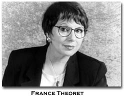

France Thèoret, translated by Gail Scott
Translator’s Note
The buried speech that creates a soundless gap between languages is at the heart of translation. This is one reason why a sentence in a French novel cannot be directly represented
by a sentence in the novel's English translation. The Reality of language A, with its rules and regulations, its strategies for creating affect, is de facto in denial of any other Reality, including the Reality of language B. Some translators overcome this by thinking of the original text as a corpus delicti. I prefer to think of the work of translation as metonymy, two languages working in extension, each of the other. To make Laurence sound in English as it does in French--with its breathless run-on French phrasing-- the majority of sentences had to be turned around completely. There is an Alice-in-the-looking-glass kind of "Reality" to the relationship between the two versions. Before they could be turned, they had to be heard. They further had to be made small, cast at a distance, because Laurence is a series of miniature tableaux. There were, of course, many agreeable meetings with the author, with whom I have done collaborative projects for more than a decade, particularly on questions of language and gender. Authorial proximity, or at least cultural proximity, i.e. a sense of cultural particularities and cadences, helps address the pull towards, the memory of, "the natural" which still haunts the novel form. I think of this as putting body sounds into syntax. The translation has chiefly been appreciated by feminists.
France
Thèoret
from Laurence
1
11
Les Miserables was the book of books. Laurence, in the manner of people for whom reading is a trial demanding tremendous concentration, even studious effort, applied herself like a schoolgirl. Every page reverberates with Victor Hugo’s humanness, his refusal to stand in judgment. The author constantly iterates his pact with the disenfranchised. Laurence saw him as a father, an exemplary figure, the kind an adult woman needed, a man who fed her hunger for meaning, for a point of reference to counterbalance the meaninglessness of existence. The book does not damn people who steal bread, nor unwed mothers, nor prostitutes, yet praises a bishop’s misunderstood generosity, and refuses to avenge the weak. It is about removing shackles, obstacles to a new future, about opening a door onto new possibilities, turning points. The poor are granted no respite, only passing triumphs. The story offers appeasement, and, for a reader like Laurence, hope of ultimate reconciliation with the world around her.
Hugo’s fresco of symbols, myths, beliefs, attitudes, social movements, wars of conquest, insurrections, opened her mind wider to the idea of fighting against her own ignorance, instead of taking refuge in the irrational thinking, in airy-fairy notions, or even religious teachings. Victor Hugo seemed to her as knowledgeable as he was tolerant. She confronted her lack of learning without abjection, eager to understand. The novel became less a work of fiction than an amalgam of references to history, to philosophy, to the study of language, custom, attitudes, and political and legal structures. The author’s wealth of wisdom was contained in his book. Her admiration for the novelist sustained her effort, and she finished what she had started, despite the book’s lengthy digressions, its occasional erudition, its frequent historical parentheses, which added depth to the unraveling plot.
Her own experience in her own social milieu was the result of a background that placed her in a similar paradigm, rubbed her up against the same questions. Why are we complaisant? Why are we so suspicious of strangers? Why does the city inspire fear? Religion’s promise of eternal punishment kept the sinner in a state of passivity. Women’s sexuality, explicitly and implicitly an object of apprehension, caution and future malediction, denatured the body, cheapening it with gross childish terms. There was no correspondence between words regarding one’s sexual practice and the terms she had learned in physiological textbooks. She was perfectly aware of how unwed mothers were discriminated against, of how they were punished allegedly to atone for their sins. She grew certain that prostitutes, unwed mothers, carefree delinquents like Gavroche and stealers of bread, did not upset the social order, were victims of a prevailing punitive moralism so entrenched that the troubling ideas of Victor Hugo were not transmittable to the majority.
Ignorance, prejudices, and attitudes that caused fear and suspicion made social peace impossible.
Victor Hugo’s epic story embraces history. The universe of war, a totally male domain, caught Laurence’s interest. She had heard Leon speak of war. The little girl did not have her head in the sand. A threat had hovered over the house as they spoke of the eldest boy who would soon reach the age of conscription. The father pointed out the names of boys in the canton, followed the reports in the newspaper. The war sucked up the vitality of the region, served up nameless youth as canon fodder. She grew interested in stories of older countries, in the history of Europe, riddled with wars.
Laurence ruminated over what caused wars. War, an absurdity presided over by men, had disastrous consequences for all. She focused on the economic aspects. Armed conflict was the surest way to impoverish people, to deprive a country of its sons, disorganize its material life for the gain of the few: politicians, generals, who grew rich on everyone’s backs.
The father’s words had a certain resonance in the social upheavals related by Victor Hugo. A crook gains the reputation of a hero, a former convict saves the ideals they are supposed to be defending. There follows a general chaos which affects the civilian population. It is held hostage, becomes the quarry from which taxes are extorted.
The love scenes, dominated by female characters, pointed to a gender distinction, implying that women and pathos were one and the same. What did she have in common with Fantine, a pretty orphan girl? She knew they existed, these girls kept by lovers, abandoned when they got pregnant so the men could marry girls of their own class. She knew all about the secret lives of young girls from the country, maids in bourgeois home, promised jewels, money, the chance to climb the social ladder. When she went dancing at the Chateau Frontenac, she noticed girls from humble backgrounds mixing with the rich boys, being taken out by them, having a good time.
She knew nothing of fairy tales, romantic novels, melodramas, never read the hagiographies that had fascinated Aline. She never bothered to take a book from the nuns’ shelves, for she was persuaded that their purpose was to indoctrinate readers, to make devout Christians of them.
Fantine’s good time turned to bad. Laurence was reminded of Estell Haley, her passionate love affair, her suicide. Estell’s constant solicitude for her parents was not commensurate with the family’s rejection of her. A huge gap opened in Laurence’s understanding. She could tell it was about the baseness of existence; instead of dwelling on it, she grew more determined. When wracked by a desire for intimacy, she glossed over it, using a prudish vocabulary. The isolation experienced by young girls appeared insurmountable.
Cosette’s naive happiness, her being adopted and cared for by Jean Valjean, makes innocence seem childish. He protects her, sparing her the secret of her origins and of the checkered past of her mentor. Laurence knew that being born a bastard was something people kept hidden. Victor Hugo waxed eloquent on their right to happiness, even if it offended prevailing morality. Cosette was the personification of the young well-protected girl, spared knowledge of her disgraced, mean beginnings. Marvelous things happen to her. Her and her mother’s early misfortunes are made up for; the troubles of Jean Valjean, vindicated. True justice offers restitution for misery. Laurence believed such a justice would exist for future generations.
For women, well-being depended upon whether or not they were accompanied in life. Their dependent state didn’t make them second-class citizens. Laurence did not cast judgment on women, did not see in the lot that befell them a sign of weakness.
Happiness requires the presence of the feminine, is made complete by the feminine’s pleasing, soothing qualities. An unnatural woman like Cosette’s wicked nurse, la Thenardier, seems uglier, more vile and dangerous than a man. A woman, whether angel, devil, or weak-willed slave of her feelings, never changes, is a creature of instinct, of her nature, which is immutable. La Thenardier knows how to lay snares, knows how to keep her eyes open, to take advantage of people. No woman makes empty gestures, except the prostitute, Fantine, who sells her hair and her teeth to support her child, but what she gives of herself is not enough. Dispossessed of her beauty, hunted down, weakened by illness, she dies. Her story is a melodrama, a sad tale to stir the imagination of girls. Victor Hugo does not believe in the emancipation of women. His humanism is of the paternalistic variety.
Laurence’s identification with Jean Valjean was not a comment on the female characters. He is a solitary figure trying to survive, and he succeeds. Jean Valjean is not ambitious, lives by no rule book. Because he is among society’s outcasts, such things never occur to him.
The hero, like Laurence, is born poor. Guilty in the eyes of the law, he cannot avoid the consequences. It could have been otherwise. Poverty breeds crime. Misery wears an iron yoke, the cloak of servitude. There is no such thing as a needy person who lets a day go by without noting he is poor, even when he no longer is. Poverty is a state of mind. Jean Valjean cannot really deny who he is. Being a fugitive from justice serves as a constant reminder. During his years of wandering, he is confounded by his desire for revenge. Hardened by life, he takes advantage of everyone he can, even a child. Violence engenders fear from which one can’t escape, except by committing more crimes. He learns at last, to live with his lack of freedom, without bitterness, without envy, forever conscious of the need to be on his guard. He runs more than he walks, develops a sixth sense for danger. Since he must not draw attention to his person, to his cornered, shut-in self, he hones his talents, relies on his brains. He doesn’t waste time polishing his personality.
Laurence refused to conceive of herself as stymied, ensnared. She didn’t obey rules she considered silly, was forever dissenting, and would do anything she had to do to get out of an unpromising situation.
The hero was the personification of a solid man, capable of doing without, never wasting energy. She identified with the physical stamina that underscored his well-balanced mind, and helped him ride roughshod over fears and inhibitions.
She reflected that people are born with different degrees of energy. Energy was both a gift and a determining factor. She was born active and resourceful, as others were born passive and floundering. You couldn’t change these things, they forged your destiny. In her opinion, very little was determined by the individual self. External factors were brought to bear on a variety of personal configurations. The absence of real freedom didn’t prevent one from action. On the contrary, it was what one was born with that limited choices in life.
For a long time Laurence had copied, imitated, adopted the ideas and behaviours of others. There had been Eduouard, who had involved her in the planning of his farm. He was her favourite for the simple reason that he had an ideal, a desire to better himself, was ambitious. Solid and consistent, Edouard had a nose for business. His desire to succeed buoyed her and for a long time she shared his dreams, with conviction.
One day while they were digging potatoes, Edouard was called on for help by a neighbour whose horse had become enmired, and she continued on her own, her bare hands feeling for the tubers that she tossed, one after the other, into baskets. Several nights of frost meant they had no time to lose, for the potatoes were the first crop from the land her brother had just bought. She was always ready to work for Edouard, for they were accomplices to the point that the land seemed to be hers as well as his. She worked there in a different way than on her father’s land, propelled by a pact between two young people who owned something that represented a step toward freedom. The sun was setting and no sign of Edouard. Laurence felt her fatigue, her knees on the ground, back bent, hands moving with rapid perseverance. She went faster rather than letting her rhythm grow sluggish, her gestures mechanical, forgetting her body. The more numb her wrists felt, the harder she worked. The cracked skin on her finger joints were bleeding. Edouard still hadn’t appeared. She finished her task: the whole field had yielded its harvest of potatoes. She was unable to straighten up entirely. Not having drunk anything, she was thirsty from eating dust, her lips chapped, her tongue thick in her mouth. Her face was black with earth, her throat covered in sweat. Spurred on by the idea that it was urgent to complete the job, she had pulled up every potato. She measured time by the five or six hours spent waiting for Edouard under the September sun. She was three miles from the house. She walked, dead beat, partly happy about what she had accomplished, partly put out by the brother whom she suddenly caught sight of chatting with the neighbour. She was so hurt she kept on walking, dazed at the thought he was taking advantage of her. She expected him to thank her. He did not. Edouard was like other men, taking one for granted when it suited him.
Laurence bore no grudge against him. One could always use her, for a time. The brother’s selfishness was part and parcel of his masculinity. The neccessity of believing in the future won out, and she continued to have a high opinion of him.
Dr. Fournier’s memory evoked feeling cozy under a cold sky filled with wind and snow that obfuscated the roads. They took off in a clean sleigh, heated with hot bricks under their feet, covered with furs and rugs, a basket full of food stowed away, complete with a thermos of coffee, without knowing when they would return. She was never cold or hungry at Beaupre. The doctor drove carefully over the packed snow, over new layers of heavy or soft snowfall, over ice. He enjoyed the meticulous rituals of his profession, identified with his art; his person and practice were one. Time didn’t matter. He had learned the importance of comfort, the better to forget oneself on behalf of the patients. The nuns spoke of vocation, of devotion, but not the doctor. Though he devoted himself to his work, he referred to it as a practice, refusing to make of science a question of morals. When illness struck, social inequality was a non-issue. He went when he was called, ignored the religious edict to save the child rather than the mother. His medical practice had a human dimension compared to that of the nuns, who saw illness as divine intervention or a message from on high, and, who, in their practice, proclaimed the need for rules of conscience, self-sacrifice, abnegation. The yoke of sacrifice had no currency at Beaupre, thus removing a useless burden that only resulted in self-pity.
The uneven road grades along the banks of the river, the deep woods somewhere beyond which were little farms, made every expedition different. Duty obliged them to travel long hours. The precise pensive man found the young woman’s exuberance and constant good humour touching. They influenced each other, reciprocally.
The Fournier household ran on a schedule adapted to the husband’s professional needs. He was the centre of gravity around which the women turned. Laurence didn’t imagine that it could be any other way. She idealized the peaceful harmony, the role played by women—including herself—in the smooth running of things. Thus, she justified her autonomy.
Laurence had long copied the behaviour of certain men, using them as role models. Edouard had taught her how to think in terms of the future, avoiding the rigidity that led to defeatism, that kept one mired in the past. Edouard had toiled for fifteen years to establish a machine-run farm, and his gamble had paid off. The announcement that he would soon marry the woman who was the same age as he, the one from Leeds, a good housekeeper, proper, to say the least, did not particularly move her one way or the other. Love and marriage were not the same thing for Laurence. She had loved and his name was Gaston. Otherwise, people’s marital pledges left her indifferent. In this, she mimed the father,who had never alluded outright to either sex or love. If Rosalie and Leon did not address each other as Papa and Maman, but persisted in using their Christian names, it was because it was natural for them to keep a respectful distance from one another. Rosalie did not take Leon’s arm when she walked with him. In church they sat close, due to the crowded benches. Though the children saw animals coupling, human procreation remained a mystery to them. Marriage was what one spoke of, not suspect desire, not that deceitful hidden glint in the eye called love. There was a gap between the two. Two bodies side-by-side evoked sex, and Leon couldn’t look at a young man and a young girl sitting close on a bench. He flew into a rage of irrational proportions, betrayed by his tormented expression, his agitation, his snarling.
Had Gaston influenced Laurence? In him she had found a kindred spirit. He had said: you have to try everything once, a little musical phrase that rocked her to sleep. Like herself, he was forever amazed. Even his sporty attitude, his frank, relaxed manner, was not unlike her own. She would have liked to somehow translate his masculinity into the feminine, to mine his debonair manner. This was not yet possible in relations between women.
Sometimes she adopted the male viewpoint, imitated their good sides. Those whom she respected became points of reference, but she didn’t make a rule of it. Better than that, she took what she needed from the men who were her role models.
Her reading of Les Miserables broadened her mind, made her more principled. Jean Valjean struggles, protects his freedom which freedom is granted by the author rather than by society at large. Victor Hugo’s pen makes of him the archetype of men maltreated and misjudged by their peers. Unfortunate from the start, he is destined to wander for years, to be decisive, to think before he acts, and to fight for the right to a peaceful existence with his loved ones, a very legitimate desire. There were countless Jean Valjeans, men and women without means, kept down by religious and social mores, doomed to despair by the economic crisis.
For once and for all, Laurence saw through the father’s lofty phrases, promising eternal life in exchange for suffering in silence, for not uttering a word, even to those around you. The power of his preaching had been such that no one was allowed to look reality in the face, a reality that he misrepresented for the sake of his own honour and moral standards. She gave herself permission to see things as she saw fit.
Had she had female role models, she who identified neither with Fantine nor Cosette? Her mother, in the shadow of the man she admired, cultivated the art of silence. Rosalie subdued the children out of respect for the father, ordered them to be quiet as soon as he entered the house. Amanda spread a white cloth on the table. The women fussed over Leon when he appeared, obeying tradition to the letter.
Rosalie’s patience in the training of her daughter was invaluable. Laurence knew how to get things done without a thousand useless questions or pointless objections. She threw herself wholly into a task, mind focused on the movement of her hands. Patience comes from resignation, but also from perseverance, which is a kind of wisdom.
There had been Sister Agnes, who had taught her French, had got her into nursing school, a kind woman with a positive outlook. She had understood Laurence’s aspirations, hadn’t repudiated her on the grounds of suspect motives such as envy or small-mindedness. Women’s qualities, due to their feminine natures, were considered weak compared to those of men, propelled by self-will. Laurence knew she had a strong character, even if she often went as the wind blew. In her opinion, prerogative was not the unique preserve of men. She adopted certain male behaviours, without bothering about whether they were suitable for a woman. She neither disdained nor rejected what she could learn from them. But though she felt no domain was closed to her as a woman, she would not have wanted, for anything in the world, to cause her father embarrassment. She was proud as he, but was also human in a way that he could never be.
She found in Jean Valjean, who was sensitive to others, to their way of being, a plausible model, a source of inspiration. She had fled her family a second time, and for good. She shouldn’t hold their treatment of her against them, she told herself. She opened herself, heart and mind, to a book, had a private dialogue with it that helped her confront her own reality. The book’s influence was powerful, direct, and filled her with an explicable desire to share it with others.
Will the future come? It seems that we may almost ask this question when we see such terrible shadow. Sullen face-to-face of the selfish and miserable. On the part of the selfish, prejudices, the darkness of the education of wealth, appetite increasing through intoxication, a stupefaction of prosperity which deafens, a dread of suffering which, with some, is carried even to aversion for sufferers, an implacable satisfaction, the me so puffed up that it closes the soul; on the part of the miserable, covetousness, envy, hatred of seeing others enjoy, the deep yearnings of the human animal towards the gratifications, hearts full of gloom, sadness, want, fatality, ignorance impure and simple.2
The meekness religion taught her in childhood made it impossible to conceive of the rich as people who committed all sorts of crimes. She dreamed of affluence come by honestly, so people wouldn’t look down on her, as they did on those down in Broughton, whose moral precepts kept them in their place. She was unable to avoid the growing feeling, itself a kind of creed, that her own happiness was inconceivable as long as they remained destitute.
She remembered how isolated she had felt in the rich mansion on Cote-Sainte-Catherine, worse than when she was behind convent walls. the conflict awakened in her by Victor Hugo hadn’t been resolved, seemed, on the contrary, more intense.
Laurence had started reading without any preconceived ideas, knowing nothing about novels, though sensitive to words. She gobbled up words with the hunger of someone who had never read, had never entered a library or bookstore, tackling the mystery of language that leads one to one’s self. For a Catholic, unfamiliar with fairy tales, romance novels, a book had something of the biblical, though she had never read the Bible either. The idea of the Book as something containing the sum total of human experience was always in the back of her mind. Laurence, who was looking for an oracle, a sage, a philosopher, found them all in the magician Victor Hugo. She admired him, he revealed the impenetrable truth of the human heart. His words were a subtle mix, exorcizing the cruelty of destiny and advocating the possibility of peace, in the end. A woman of her situation, no less than a man, could not bear the triumph of evil. His words consoled her, comforted her,and she believed in the progress of good, in the possibility of true communion between people.
Les Miserables opened one to the possibility of human mercy, tolerance instead of punitiveness: the novel was an anti-Bible. The authoritarianism, the rigid intransigence of her education were reframed, and she welcomed these words that redressed injustice and helped her justify her flights from the family.
The novel didn’t awake a desire to read, it satisfied it. The effort expended in reading was rewarded, and she was convinced that evil could give birth to good. The narrow-mindedness of her origins no longer seemed like a moral blemish, but a matter of attitude. It’s all they know...became her favourite phrase. She excused them.
It took common sense to see the relationship between the book and reality, to switch mentally from one to the other. She thought about how things were represented. It became a game to improve on the novel’s ending, to plead in favour of the right to happiness. Words she didn’t understand added depth to those she did. A reader who reads word-by-word grasps the poetry of a work. If she persisted to the end, which was her way with any undertaking, she saw the job of reading as comparable to other work.
Laurence had satisfied her curiosity as far as books were concerned. She intuited that no other book would teach her what Les Miserables had. She had read the Book that contained all other books.
Notes
1. In this section from France Théoret's novel about rural and working-class Québec between the two world wars, the character Laurence, a young woman from a very poor family who has struggled long and hard to become a nurse, discovers Les Miserables and makes it her "Bible. (go back to text)
2.from, Les Miserables by Victor Hugo, translated by E. Charles Wilbur, Knopf, Toronto, 1997. (go back to text)
The publishers of How2 gratefully aknowledge permission to reprint this section of Laurence granted by the author, translator, The Mercury Press, (publishers of Laurence, 1998) and the Canadian Reprography Collective.
BIO: France Théoret quit teaching after 19 years to devote herself full-time to writing. Laurence is Théoret's eleventh book; previous titles available in English include The Man Who Painted Stalin (Mercury Press).
BIO: Gail Scott is the author of the novels My Paris (Toronto: Mercury Press, 1999), Main Brides, Heroine, a collection of short stories, Spare Parts, the essay collection Spaces like Stairs, and la théorie, un dimanche (co-authored with Nicole Brossard, France Théoret, et al). Her translation of France Théoret's novel Laurence was published by Mercury Press in 1998.